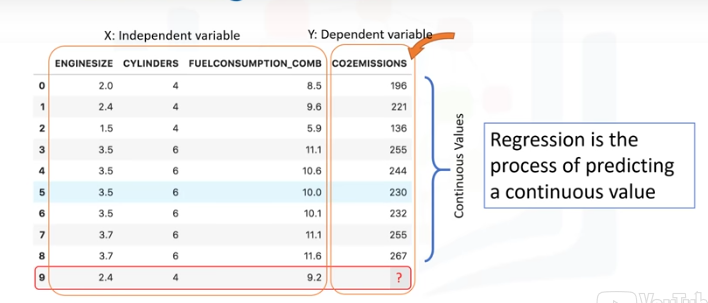
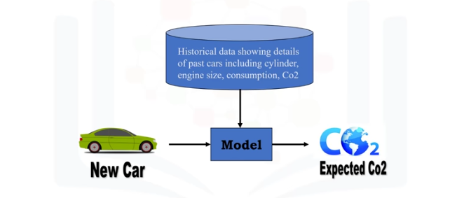
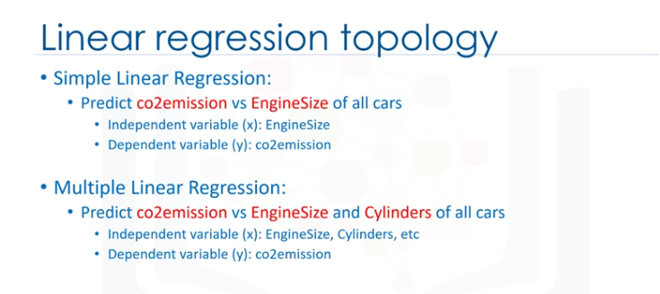
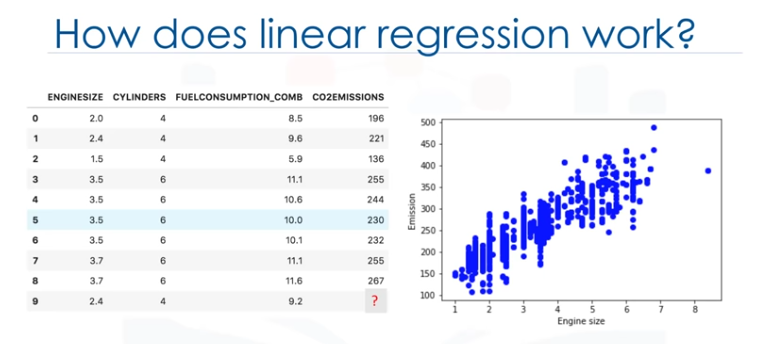
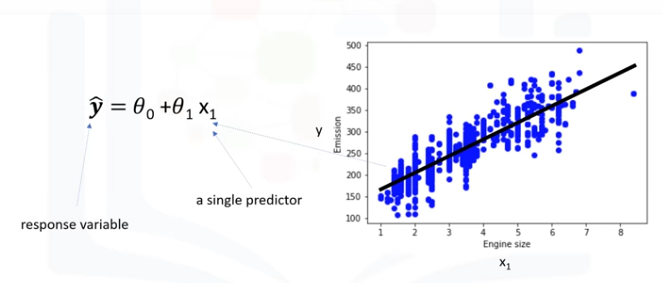
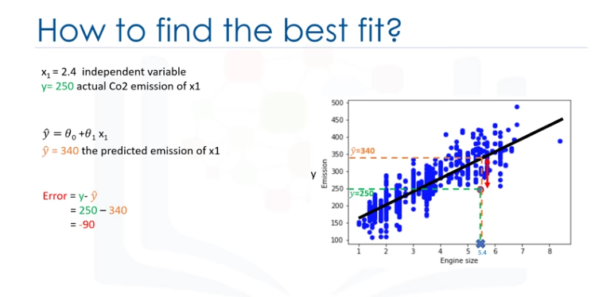
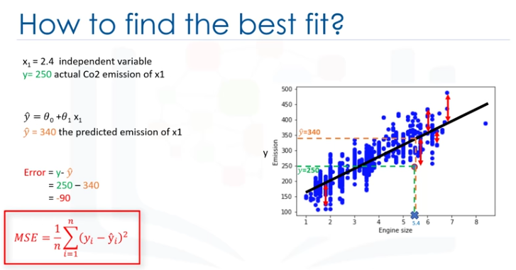
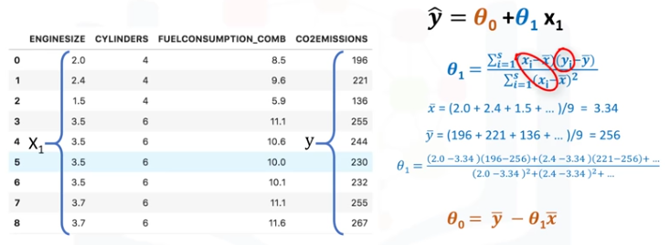
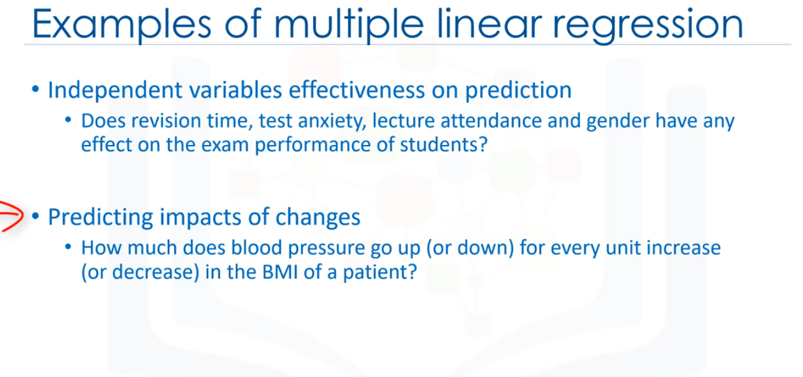
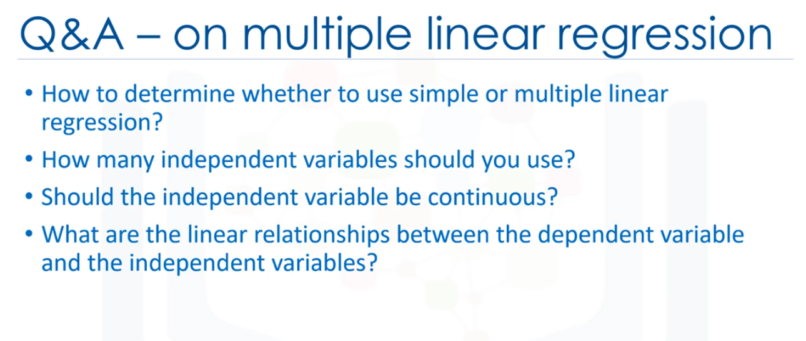

Introducción al modelo de Regresión.
Mire este conjunto de datos.

Estos estan relacionadas con las emisiones de CO2 de los diferentes automóviles. Incluyendo el tamaño del motos, el número de cilíndros, el consumo de combustible
y las emisiones de CO2 de varios modelos automotrices.
La pregunta es. "Dado este conjunto de datos, podemos predecir la emisión de CO2 de un coche utilizando otros campos como, por ejemplo, EngineSize o Cylinders?"
Supongamos que tenemos algunos datos históricos de diferentes autos, y supongamos que un auto, como en la fila 9, aún no se ha fabricado, pero estamos interesados en la estimación de su
aproximado para las emisiones de CO2, después de la producción.
¿Es posible?
Podemos utilizar métodos de regresión para predecir un valor continuo, como por ejemplo Emisión de CO2, algunas otras variables de hecho, la regresión es el proceso de predicción
de un valor continuo. En la regresión hay dos tipos de variables: una variable dependiente y una o más variables independientes.
La variable dependiente se puede ver como el "estado", "objeto" o "el objetivo final" que estudiamos y tratar de predecir, y las variables independientes también conocidas como variables
explicativas, pueden verse como la "causa" de los "estados".
Las variables independientes se muestran convencionalmente por 'x',y 'y' la variable dependiente.
Un modelo de regresión se refiere a 'y', o la variable dependiente, a una función de 'x', es decir, a las variables independientes.
El punto clave de la regresión es que nuestro valor dependiente debe ser continuo, y no puede ser un valor discreto. Sin embargo, la variable independiente o las variables se pueden medir en
categorías o escala de medición continua. Por lo tanto, lo que queremos hacer aquí es usar los datos históricos de algunos autos usando uno o más de sus características, y a partir de esos datos,
hacer un modelo.

Usamos la regresión para construir un modelo de regresión/estimación.
A continuación, el modelo se usa para predecir la emisión de CO2 esperada para un coche nuevo o desconocido. básicamente, hay 2 tipos de modelos de regresión:
- Regresión simple
- Regresión múltiple
La regresion simple es cuando se usa una variable independiente para estimar una variable dependiente. Puede ser lineal en no lineales, por ejemplo, pronosticar las emisiones utilizando la variable EngineSize.
La linealidad de la regresión se basa en la naturaleza de la relación entre la independencia y la dependencia de las variables.
Cuando hay más de una variable independiente presente, el proceso se llama regresión múltiple lineal, por ejemplo, prediciendo emisiones de CO2 usando EngineSize y Cylinders en cualquier auto dado.
De nuevo, en función de la relación entre las variables dependientes e independientes, peude ser, regresión lineal o no lineal.
Esencialmente, usamos la regresión cuando queremos estimar un valor continuo, por ejemplo, una de las aplicaciones de análisis de regresión es en el área de la previsión de ventas.
Puede intentar predecir las ventas anuales totales de un vendedor de variables independientes como, por ejemplo, la edad, la educación y años de experiencia.
También se puede usar en el campo de la psicología, por ejemplo, para determinar la satisfacción individual basado en factores demográficos y psicológicos. Podemos usar el análisis de regresión para predecir
el precio de una casa en un área basada en su tamaño, nº de habitaciones y así...
Tenemos muchos algoritmos de regresión, cada uno de ellos, tiene su propia importancia y una condición específica a la que su aplicación es la más adecuada.

No son necesarios saberes previos de álbegra lineal para entender los temas de regersión lineal para poder usarlos de forma efectiva en sus propios porblemas.
Así que, empecemos... Echemos un vistazo a este conjunto de datos. Está relacionado con la emisión de CO2 de diferentes coches. Incluye el tamaño del motor, cilindros, consumo de combustible y las emisiones de CO2
para los distintos modelos de coches. La pregunta es: Donde este conjunto de datos, podemos predecir la emisión de CO2 de un ochce, utilizando otro campo como, por ejemplo, el tamaño del motor?
Sencillamente, sí! Podemos usar regresión lineal para predecir un valor continuo como, por ejemplo, Emisión de CO2, usando otras variables. La regresión lineal es la aproximación de un modelo lineal que se usa para describir
la relación entre dos o mñas variables. En la regresión lineal simple, hay dos variables: una variable dependiente y una independiente.
El punto clave en la regresión lineal es que nuestro valor dependiente debe ser continuo y no puede ser un valor discreto. Sin embargo, las variables independientes pueden ser medidas en una escala de medida categórica o continua.
Existen dos tipos de modelos de regresión lineal:
- Regresión simple
- Regresión múltiple

La reg. simple es cuando se usa una variable independiente para estimar una variable dependiente. Por ejemplo, predicando la emisión de CO2 usando la variable Engine Size. Cuando se usa más de una variable independiente
ahora, el proceso se denomina reg. lineal múltiple.
Por ejemplo, prediciendo las emisiones de CO2 usando EngineSize y Cylinders de los coches.
Nuestro enfoque es en una regresión lineal simple. Ahora, veamos nuestro conjunto de datos.

Para entender la regresión lineal, podemos trazar nuestras variables aquí, mostramos el tamaño del motor como una variable independiente, emisión como el valor objetivo a predecir. Un diagrama de dispersión muestra claramente la relación entre
variables en las que los cambios de una variable "explican" o posiblemnte, "hacen que" cambie la otra variable. Además, indica que estas variables están relacionadas linealmente.
Con la regresión lineal, puede ajustar una línea a través de los datos. Por ejemplo, a medida que aumenta el EngineSizem también las emisiones.
Con la regresión lineal, se puede modelar la relación de estas variables, un buen modelo se puede usar para predecir cuál es la emisión aproximada decada coche.
¿Cómo se usa esta linea para predecir ahora? SUpongamos, por un momento, que la línea es un buen ajuste de los datos. Podemos usarlo para predecir la emisión de un coche desconocido. Po ejemplo, para un coche de muestra con motor tamaño: 2,4, se
puede encontrar la emisión es 214.
Ahora, vamos a hablar de lo que esta línea de ajuste es en realidad. Vamos a predecir el valor objetivo, y en nuestro caso, usando la variable independiente "tamaño motor" representada por x1.

La línea de ajuste se muestra tradicionalmente como un polinomio. En un problema de regresión simple (una sola x), la forma del modelo sería θ0 + θ1 x1. En esta ecuación, y ̂ es la variable dependiente o el valor pronosticado, x1 es la variable independiente;
los parámetros 0 y 1 son los parámetros de la línea que debemos ajustar. θ1 es conocida como la "pendiente" o "gradiante" de la línea de ajuste y el valor θ0 se conoce como el "intercepto" θ0 y θ1 son los coeficientes de la ecuación lineal. Se puede
interpretar esta ecuación como si y^ fuera una función de x1, o una función que dependa de x1.
¿Cómo se dibujaría una línea a través de los puntos? y ¿cómo se determina cuál de las líneas encaja mejor?
La regresión lineal estima los coeficientes de la línea. Esto significa que debemos calcular θo y θ1 para encontrar la mejor línea para "ajustar" los datos. Esta línea estomaría mejor la emisiñon de los data points desconocidos.
Vamos a ver cómo podemos encontrar esta línea o para ser más precisos, cómo podemos ajustar los parámetros para hacer que la línea seael mejor ajuste para los datos.Por un momento supongamos que ya hemos encontrado la mejor línea de ajuste para nuestros datos.
Ahora, vamos a pasar por todos los puntos y comprobar lo bien que se alinean con esta línea.

Error residual.
El mejor ajuste, significa que si tenemos, por ejemplo, un coche con un tamaño de motor de x1=5.4 y CO2=250, su CO2 debe aproximarse muy cerca del valor real, que es y=250, basado en datos históricos, pero, si usamos la línea de ajuste, o mejor dicho,
usando nuestro polinomio con parámetros conocidos para predecir la emisión de CO2, devolverá y=340.
Ahora, si comparamos el valor real de la emisión del coche con lo que predijimos usando nuestro modelo, descubrirá que tenemos un error de 90 unidades.
Esto significa que nuestra línea de predicción no es precisa, este error se denomina error residual.
Por lo tanto , podemos decir que el error es la distancia desde el punto de datos hasta la línea de regresión ajustada. La medida de todos los errores residuales muestra lo mal que encaja la línea con todo el conjunto de datos.
Matemáticamente puede ser demostrado por la ecuación, el error de cuadrado medio, mostrado como (MSE).

Nuestro objetivo es encontrar una línea en la que se minimice la media de todos los errores, en otras palabras, el error medio de la predicción usando la línea de ajuste debe minimizarse.
El objetivo de la regresión lineal es minimizar la ecuación de MSE, y para minimizarla deberíamos encontrar los mejores parámetros para θ0 y θ1.
¿Cómo encotrar θ0 y θ1 de tal manera que se minimiza este error?
¿Cómo podemos encontrar una línea tan perfecta? o ¿Deberíamos mover la línea de forma aleatoria y calcular el valor de MSE cada vez, y elegir el mínimo?
No, en realidadm tenemos dos opciones aquí:
- Opción 1- Podemos usar un enfoque matemático.
- Opción 2- Podemos usar un enfoque a optimización.
Como se ha mencionado anteriormente θ0 y θ1, en la regresión lineal simple, son los coeficioentes de línea de ajuste. Podemos usar una simple ecuación para estimar estos coeficientes, Esto esm dado que es una regresión lineal simple, con sólo 2 parámetros, y sabiendo que θ0 y θ1
son el intercepto y la pendiente de la línea, podemos estimarlos directamente a partir de nuestros datos. Se requiere que calculemos la media de las columnas independientes y dependientes, objetivo del conjunto de datos.
Tenga en cuenta que todos los datos deben estar disponibles para atravesar y calcular los parámetros. Se puede mostrar que la intercepción y la pendiente se puede calcular usando estas ecuaciones. Podemos empezar por estimar el valor de θ1.

Esta es la forma en la que se puede encontrar la pendiente de una línea basado en los datos. x- es el valor promedio para el tamaño del motor en nuestro conjunto de datos.
Los xi y yi de la ecuación se refiere al hecho que tenemos que repetir estos cálculos a través de todos los valores de nuestro conjunto de datos y se refiere en el valor i'th de x o y.

Aplicando todos los valores, encontramos θ1=39; es nuestro segundo parámetro. Se usa para calcular el primer parámetro, que es la intercepción de la línea. Ahora, podemos conectar θ1 a la ecuación de la línea para encontrar el valor de θ0.
Se calcula fácilmente el valor θ0=125.74, Así que, estos son los dos parámetros para la línea donde θ0 es también llamado coeficiente de derivación y θ1 es coeficiente para la columna de emisión de CO2.
Ahora, podemos escribir el polinomio de la línea, así que sabemos cómo encontrar el mejor ajuste para nuestros datos, y su ecuación.

¿Cómo podemos usarlo para predecir la emisión de un nuevo coche basado en su tamaño del motor?
Después de que encontramos los parámetros de la ecuación lineal, hacer predicciones es tan simple como solucionar la ecuación para un conjunto específico de entradas. Imaginemos que estamos predicioendo CO2 Emission (y) de EngineSize (x) para el
automóvil en el registro número 9. Representación de modelo de regresión lineal para este problema sería y^=θ0 + θ1 x1., si lo correlacionamos con nuestro conjunto de datos, sería CO2Emission = θ0 + θ1 EngineSize
Por ejemplo, vamos a usar θ0=125 y θ1=39. Por lo tanto, podemos volver a escribir el modelo lineal como CO2Emission = 125 + 39EngineSize.
Ahora, conectamos la nivena fila de nuestro conjunto de datos y calcule la emisión de CO2 para un conce con EngineSize=2,4. Así:
CO2Emission= 125 + 39 x 2.4 = 218.6
 Podemos predecir que las emisiones para el coche específico sería de 218.6.
Podemos predecir que las emisiones para el coche específico sería de 218.6.
La regresión lineal es útil, sencillamente, es la regresión más básica que hay que utilizar y entender, de hechom una razón por la que la regresión lineal es tan útil es que es rápida, no requiere ajuste de parámetros, por lo tanto, algo parecido a ajustar el parámetro K en los
K-Vecinos más cercanos o la tasa de aprendizaje en las redes neuronales no es algo sobre que preocuparse. La regresión lineal es fácil de entender y altamente interpretable.

Regresión Lineal Múltiple
Como se sabe, hay dos tipos de regresión lineal: regresión simple y regresión múltiple.
La regresión lineal simple es cuando una variable independiente se usa para estimar una variable dependiente. Por ejemplo, predecir la emisión de CO2
utilizanso la variable EngineSize.
Laboratorio: Regresión Lineal Simple.
Este curso usa CC Labs, un ambiente virtual online que dispone al alcance de la mano la experiencia necesaria sin tener que instalar y configurar herramientas de software.
Se accede a conocidas herramientas de código abierto de data science (ciencia de datos) directo desde el navegador, como ser el Jupyter Notebook, el cual se usa para practicar
con Spark en el presente laboratorio.
Cómo comenzar los ejercicios del presente módulo (Jupiter Notebook):
Hacer click en el botón start lab, seguir las instrucciones de la notebook y a aprender se ha dicho! :)
Puede hacer click en las flechas y los botones de arriba para visualizar las respuestas para este laboratorio.
¿Aún con problemas para abrir este ejercicio? Queremos enterarnos inmediatamente! Contacta en el botón de Support.
¿Deseas aprender más?
IBM SPSS Modeler es una plataforma para analytics que contiene varios algoritmos de machine learning. Fue diseñada para acercar inteligencia predictiva a las decisiones hechas por individuos,
grupos, sistemas, toda la empresa. Un free trial está disponible a través de este curso en SPSS Modeler for Mac
y SPSS Modeler for Windows.
También, es posible utilizar Data Science Experience para ejecutar más rápidamente y sobre datasets (conjunto de datos) más grandes. Data Science Experience es una solución de IBM lider para científicos
de datos en la nube, hecha `pr científicos de datos. Con Jupiter Notebooks, RStudio, Apache Spark y librerías conocidas pre instaladas en la nube, DSX (Data Science eXperience) posibilita a los científicos
de datoscolaborar en sus proyectos sin tener que instalar nada. Sumase a la comunidad de usuarios DSW hoy mismo por medio de una cuenta gratuita en
Data Science Experience.
Regresión Simple Lineal - Cognitive Class.ai
Acerca de este lab.
Aprenderemos cómo utilizar la librería scikit-larn para implementar regresión lineal simple. Descargaremos un set de datos relacionado al consumo de combustible y a la emisión del dióxido de Carbono en autos. Luego, separaremos nuestros datos en un set
de entrenamiento y en otro set de prueba, crearemos un modelo usando un set de entrenamiento, se evaluará usando el set de prueba para finalmente usar el modelo para predecir valores desconocidos.
Importando paquetes necesarios
import matplotlib.pyplot as plt
import pandas as pd
import pylab as pl
import numpy as np
%matplotlib inline
Descargando los Datos
Para descargar los datos, usaremos !wget desde IBM Object Storage:
!wget -O FuelConsumption.csv https://s3-api.us-geo.objectstorage.softlayer.net/cf-courses-data/CognitiveClass/ML0101ENv3/labs/FuelConsumptionCo2.csv
¿Sabías? Cuando se trata de Machine Learning, seguro trabajarás con grandes datasets (juego de datos). Entonces, ¿dónde podrás guardar esos datos? IBM ofrece una oportunidad única para las empresas, con 10Tb de IBM Cloud Object Storage:
Sign up now for free
Understanding the Data
FuelConsumption.csv
Hemos descargado el dataset de consumo de combustible, FuelConsumtion.csv, el cual contiene ratings específicos al consumo de combustible y emisiones de dióxido de carbono para aquellos vehículos ligeros en la venta minorista dentro de Canadá.
Dataset source.
-
Modelyear
e.g. 2014
-
Make
e.g ILX
-
Vehicle size
e.g SUV
-
Engine size
e.g 4.7
-
Cylinders
e.g 6
-
Transmission
e.g A6
-
Fuel consumption in city (L/100km)
e.g 9.9
-
Fuel consumption in hwy (L/100km)
e.g 8.9
-
Fuel consumtion comb (L/100km)
e.g 9.2
-
CO2 Emissions (g/km)
e.g 182 → low → 0
Leyendo los datos
df = pd.read_csv("FuelConsumption.csv")
# Un vistazo dentro del set de datos
df.head()
Explotación de datos
Tengamos primero una exploración descriptiva de nuestros datos.
# Sumarizar los datos
df.describe()
Seleccionemos algunas características para explorar más en detalle.
cdf = df[['enginesize','cylinders','fuelconsumption_comb','co2emissions']]
cdf.head(9)
Ahora, comparemos estas características anteriores con la emisión de carbono, para ver cuán lineal es la regresión:
plt.scatter(cdf.FUELCONSUMPTION_COMB, cdf.CO2EMISSIONS,color='blue')
plt.xlabel("FUELCONSUMPTION_COMB")
plt.ylabel("Emission")
plt.show()
plt.scatter(cdf.ENGINESIZE, cdf.CO2EMISSIONS, color='blue')
plt.xlabel("Engine size")
plt.ylabel("Emission")
plt.show()
Creando un set de datos de entrenamiento y de prueba
Train/Test Split divide el dataseet en uno de entrenamiento y otro de pruebas, siendo excluyentes. Después de ello, entrenas con el set de entrenamiento y pruebas con el de prueba. Esto brinda una evolución más exacta porque el set de entrenamiento no es parte de un set de datos que se usaron para entrenar datos.
Refleja un escenario más real basado en problemas más actuales.
Esto significa que sabemos la aslida de cada punto de datos del set, siendo un escenario ideal Y como estos datos no se usarion para entrenar el modelo, el modelo no sabe la salida de estos puntos de datos. Así que, básicamente, es una real prueba fuera de muestra.
msk = np.random.rand(len(df)) < 0.8
train = cdf[msk]
test = cdf[~msk]
Modelo de Regresión Simple
La Regresión Lineal cuadra con un modelo lineal de coeficientes B=(B1,...,Bn) para minimizar la 'suma residual de cuadrados' entre la x independiente del dataset y la dependiente y por la aproximación lineal.
Entrenar distribución de los datos
plt.scatter(train.ENGINESIZE, train.CO2EMISSIONS, color='blue'
plt.xlabel("Engine size")
plt.ylabel("Emission")
plt.show()
Modeling
Usando el paquete sklearn para modelar datos.
from sklearn import linear_model
regr = linear_model.LinearRegression()
trains_x = np.asanyarray(train[['ENGINESIZE']])
train_y = np.asanyarray(train[['CO2EMISSIONS']])
regr.fit (train_x, train_y)
#T The coefficients
print ('Coefficients: ', regr.coef_)
print ('Intercept: ', regr.intercept_)
Como se mencionó antes, Coeficiente e Intercepción en la regresión lineal simple, son los parámetros de la recta de ajuste. Dado que es una regresión lineal simple, con 2 parámetros solamente, y sabiendo que los parámetros son la intersección y pendiente de la linea,sklearn puede estimarlas
directamente a partir de los datos. Tener en cuenta que todos los datos deben estar disponibles para poder calcular los parámetros.
Trazar las salidas
Podemos marcar la recta de ajuste sobre los datos:
plt.scatter(train.ENGINESIZE, train.CO2EMISSIONS, color='blue')
plt.plot(train_x, regr.coef_[0][0]*train_x + regr.intercept_[0], '-r')
plt.xlabel("Engine size")
plt.ylabel("Emission")
Evaluación
Comparamos los valores actuales y predichos para calcular la exactitud del modelo de regresión. Las métricas de la evaluación proveen un role principal en el desarrollo de un modelo, ya que provee conocimiento profundo en áreas que necesitan mejoras.
Existen distintas métricas de evaluación de modelos, utilicemos MSE para calcular la exactitud de nuestro modelo basado en el set de prueba:
- Error absoluto de medida: Es una media del valor absoluto de los errores. Es la métrica más fácil de comprender ya que simplemente es el promedio de los errores.
- Error Cuadrado Medio (MSE): El Error Cuadrado Medio es la media del error cuadrático. Es más popular que el error de Media absoluto porque hace foco en grandes errores. Esto se debe a que el término cuadrático tiene errores más grandes que van creciendo en comparación con más pequeños.
- Error Cuadrático Medio (RMSE): R-cuadrática no es un error, sino que es una media popular para darle precisión a nuestro modelo. Representa cuán cerca están los datos de la línea de regresión ajustada.
Mientras más alto el R-cuadrático, mejor se encontrarña ajustado el modelo respecto de los datos. EL puntaje mejor posible es 1.0 y puede tomar valores negativos (porque el modelo puede ser arbitrariamente peor).
from sklearn.metrics import r2_score
test_x = np.asanyarray(test[['ENGINESIZE']])
test_y = np.asanyarray(test[['CO2EMISSIONS']])
test_y_ = regr.predict(test_x)
print("Error medio absoluto: %.2f" % np.mean(np.absolute(test_y_ - test_y)))
print("Suma residual de los cuadrados (MSE): %.2f" % np.mean((test_y_ - test_y) **2))
print("R2-score: %.2f" % r2_score(test_y_,test_y))
¿Deseas aprender más?
IBM SPSS Modeler es una plataforma para analytics que contiene varios algoritmos de machine learning. Fue diseñada para acercar inteligencia predictiva a las decisiones hechas por individuos, grupos, sistemas, toda la empresa. Un free trial está disponible a través del curso en: SPSS Modeler.
Así mismo, puedes utsa Watson Studio para ejecutar estos notebooks más rápido y con datasets más grandes, Wantson Studio es una solución en la nube lider de IBM's para científicos de datos, construída por científicos de datos. Con Jupyter Notebooks, RStudio, Apache Spark y librerías conocidas pre instaladas
en la nube, Watson Studio posibilita a los científicos de datos colaborar en sus proyectos sin tener que instalar nada. Sumate a la comunidad de usuarios Watson Studio hoy mismo por medio de una cuenta gratuita en Watson Studio.
Regresión Lineal Multiple
Cuando hay múltiples variables independientes presentes, el proceso se llama "regresión lineal multiple". Por ejemplo, predecir la emisión de CO2 utilizando EngineSize y el número de Cilindors en el motor del coche.
Lo bueno es que la regresión lineal múltiple es la extensión del modelo de reg. lineal simple.
Antes de sumergirnos en un dataset de muestra y ver cómo funciona la regresión lineal ¿qué tipo de preguntas responde usándolo?
Básicamente, hay dos tipos de aplkicaciones para la regresión lineal múltiple. En primer lugar, puede ser usado cuando nos gustaría identificar la fuerza del efecto que las variables independientes tienen en una variable dependiente.

Por ejemplo, el tiempo de revisión, la ansiedad de la prueba, la asisntecia a clase y el género,
¿tiene algún efecto en el examen de rendimiento de los estudiantes? En segundo lugra, se puede usar para predecir el impacto de cambios. Es decir, para entender cómo cambia la variable dependiente cuando cambiamos las variables independientes. Por ejemplo, si estuvieramos revisando los datos de una persona, una regresión lineal múltiple puede indicarte cuánto aumenta (o disminuye)
la presión arterial de esa persona por casa aumento (o disminución) unitario en el índice de masa corporal (IMC) de un paciente, manteniendo constante otros factores. Como es el caso con regresión lineal simple, la regresión lineal múltiple es un método de predecir una variable continua. Utilizando múltiples variables, llamadas
variables independientes, o predictores, que mejor predicen el valor de la variable objetivo, que es también llamada variable dependiente. En la regresión lineal múltiple, el valor objetivo, y, es una combinación lineal de variables independientes, x.
Como el tamaño del motor del coche, el número de cilíndros y consumo de combustible.
La regresión lineal múltiple es muy útil porque puede examinar qué variables son predictores significativos de la variable de resultados. Además, puede averiguar cómo impacta cada característica la variable de resultados. Y de nuevo, como es el caso en la regresión lineal simple, si se consigue crear un modelo de regresión, se puede usar para predecir la cantidad de emisión de un caso
desconocido, como el número de registro 9.

Por lo general, el modelo tiene el formato: y=θ_0 + θ_1 x_1 + θ_2 x_2 y así en, hasta ... +θ_n x_n.
Matemáticamente, podemos mostrarlo como una forma de vector también esto significa que se puede mostrar como un producto de punto de 2 vectores: el vector de parámetros y el vector de conjunto de características. Generalmente, podemos mostrar la ecuación de un espacio multidimensional como θ^T x, donde 0 es un vector de n por un parámetro desconocidos en un espacio multidimensional, y x es el
vector de los conjuntos de características, como 0 es un vector de coeficientes, y se supone que se multiplica por x. Convenientemente, se muestra como transponer θ. θ es también llamado los parámetros, o, vector de peso de la ecuación de regresión ... ambos, estos términos se pueden usar indistintamente. Y x es el conjunto de características, que representa un coche. Por ejemplo, x1 para el tamaño del motor,
o x2 para los cilindros, etc. El primer elemento del conjunto de características se establecería en 1, porqie convierte el θ_0 en el parámetro de intercepción o sesgo cuando el vector se multiplica por el vector de parámetro. Por favor, observe que 0^T x en un espacio dimensional, es la ecuación de una línea.
Es lo que usamos en regresión lineal simple, en dimensiones más altas, cuando tenemos más de una entrada (θ x), la línea se denomina plano o hiper-plano. Y esto es lo que usamos para la regresión lineal múltiple. Por lo tanto, la idea es encontrar el mejor hiper-plano para nuestros datos. Para este fin, y como es el caso en la regresión lineal, debemos estimar los valores para el vector θ que mejor predice el valor del campo objetivo
en cada fila.
Para lograr este objetivo, tenemos que minimizar el error de la predicción, ahora, la pregunta es "¿Cómo podemos encontrar los parámetros optimizados?" Para encontrar los parámetros optimizados para nuestro modelo, primero debemos entender cuáles son los parámetros optimizados. A continuación, encontraremos una forma de optimizar los parámetros.
En resumen, los parámetros optimizados son los que conducen a un modelo con los erores menos graves, supongamos, por un momento, que ya hemos encontrado el vector de parámetros de nuestro modelo, significa que ya conocemos los valores del vector 0. Ahora, podemos usar el modelo, y el conjunto de características de la primera fila de nuestro dataset para predecir la emisión de CO2 para el primer coche, correcto?
Si insertamos los valores del conjunto de características a la ecuación del modelo, encontraremos y digamos, por ejemplo, que devuelve 140 como valor predicho para esta fila específica.
¿Cuál es el valor real? y=196
¿Qué tan diferente es el valor pronosticado del valor real de 196? Bueno, podemos calcularlo simplemente, 196-140=56. Este es el error de nuestro modelo, sólo para una fila, o un coche, en nuestro caso. Como es el caso en regresión lineal, podemos decir qie el error aquí es la distancia desde el dato puntual hasta el modelo de regresión ajustada. La media de todos los errores residuales muestra qué tan malo es el modelo representa el dataset.
Se denomina mean squared error o MSE.

Matemáticamente, la MSE puede ser mostrada por la ecuación. Si bien esta no es la única forma de exponer el error de un modelo de regresión lineal múltiple, es una de las formas más populares de hacerlo. el mejor modelo para nuestro dataset es el que tiene un error mínimo para todos los valores de predicción. Por lo tanto, el objetivo de la regresión lineal múltiple es minimizar la ecuación de MSE. Para minimizarlo, deberíamos encontrar los mejores
parámetros 0, pero ¿cómo? De acuerdo, ¿Cómo se encuentra el parámetro o coeficientes para la regresión lineal múltiple?
Hay muchas maneras de estimar el valor de estos coeficientes, sin embargo, los métodos más comunes son los mínimos cuadrados ordinarios y el enfoque de optimización, los mínimos cuadrados ordinarios tratan de estimar los valores de los coeficientes minimizando el "mean square error", Este enfoque utiliza los datos como una matriz y usa operaciones de álgebra lineal para estimar los valores óptimos para la theta.
El problema con esta técnica es la complejidad del tiempo para calcular las operaciones matriciales, ya que puede tardar mucho tiempo en terminar. Cuando el número de filas del dataset es menos de 10.000 se puede pensar en esta técnica como una opción, sin embargo, para valores mayores, deberíamos probrar otros enfoques más rápidos.
La segunda opción es usar un proceso de optimización de los valores de los coeficientes al minimizar de manera iterativa el error del modelo en sus datos de formación, por ejemplo, puede utilizar Grandient Descent, que inicia la optimización con valores alleatorios para cada coeficiente A continuación, calcila los errores, e intenta minimizarlo cambiando sabiendo los coeficientes en múltiples iteraciones. Grandient descent es un enfoque adecuado si se tiene
un dataset grande, por favor, entienda, sin embargo, que hay otros enfoques para estimar los parámetros de la regresión lineal múltiple que se puede explorar por su cuenta.

Después, de encontrar los mejores parámetros para el modelo, puede ir a la fase de predicción, después de encontrar los parámetros de la ecuación lineal, hacecr predicciones es tan simple como resolver la ecuación para un conjunto específico de entradas.
Imaginemos que estamos prediciendo emisiones de CO2 y/o de otras partículas para el automóvil en el registro número 9, nuestra representación de modelo de regresión lineal para este problema sería: y= θ^T x. Una vez que encontremos los parámetros, podemos conectarlos en la ecuación del modelo lineal. Por ejemplo, vamos a usar 00 = 125,01 = 6.2, 02 = 14, y entonces así. Si lo mapeamos con nuestro dataset, podemos reescribir el modelo lineal
como "Co2 Emission=125 más 6.2 multiplicado por el tamaño del motor más 14 multiplicado por el cilindro", así, como puede ver, estimar la regresión lineal múltiple la importancia relativa de los predictores. Por ejemplo, muestra cque cilindro tiene mayor impacto en las cantidades de emisiones de CO2 en comparación con el tamaño del motor. Ahora, conectemos la novena fila de nuestro dataset y calculemos la emisión de CO2 para un coche con el
tamaño del motor de 2.4. Así que la Emisión de CO2 = 125+6.2x2.4+14x4 .... y así, podemos predecir la emisión de CO2 para este tipo de coche sería 214,1.

Como se ha visto, se puede usar múltiples variables independientes para predecir un valor objetivo en una regresión lineal múltiple. A veces resulta un mejor modelo en comparación con el uso de una regresión lineal simple, que usa sólo una variable independiente para predecir la variable dependiente. Ahora la pregunta es: ¿Cuántas variables independientes se deberían usar para la predicción? ¿Deberíamos usar todos los campos de nuestro dataset? ¿Agregar variables independientes
a un modelo de regresión lineal múltiple simepre aumenta la presición del modelo? Básicamente, agregar demasiadas variables independientes sin ninguna justificación teórica puede resultar un modelo de sobreajuste. Un modelo de sobreajuste es un problema real porque es demasiado complicado
para su dataset y no es lo suficientemente general como para ser usado para la predicción. Por lo tanto, se recomienda evitar el uso de muchas variables para la predicción, hay diferentes maneras de evitar el sobreajuste de un modelo en regresión, sin emabrgo, eso está fuera del alcance del curso.

La siguiente pregunta es: ¿Deben las variables indeoendientes ser continuas? Básicamente, las variables independientes categóricas pueden incorporarse en un modelo de regresión al convertirlas en variables numéricas. Por lo tanto, dada una variable binaria como tipo de coche, el código es "θ" para "Manual" y 1 para "Automático".
Como último punto, recuerde que la regresión lineal múltiple es un tipo específico de regresión lineal, por lo tanto, tiene que haber una relación lineal entre la variable dependiente y cada una de las variables independientes. Hay una serie de formas de comprobar la relación lineal, por ejemplo, puede utilizar diagramas de dspersión y, luego, comprobar visualmente la linealidad. Si la relación mostrada en el diagrama de dispersión no es lineal, entonces, debe usar regresión no lineal.
Model Evaluation in Regression Models
En este caso cubriremos la evaluación de modelos. El objetivo de la regresión es crear un modelo para predecir con precisión un caso desconocido.
Con este fin, tenemos que realizar una evaluación de regresión despueés de crear el modelo, en este caso, estudiaremos dos tipos de enfoques de evaluación que puedan ser utilizados para lograr este objetivo, estos enfoques son: el entrenamiento y la prueba em el mismo dataset, y la división del tren de pruebas.
Además, introduciremos algunas métricas para la precisión de los modelos de regresión.
¿Cómo podemos calcular la precisión de nuestro modelo? En otrras palbaras, ¿cuánto podemos congiar en este modelo para la prediccion de una muestra desconocida, usando un determinado dataser y habliendo construido un modelo como la regresión lineal. Una de las soluciones consiste en seleccionar una parte de nuestro dataset para la realización de pruebas.
Por ejemplo, siponfamos que tenemos 10 registros en nuestro dataset, usamos todo el dataset para el entrenamiento, u construimos un modelo usando este conjunto de entrenamiento, Ahora, seleccionamos una pequeña porción del dataset, tales como los números de fila 6 a 9, pero sin etiquetas.
Este conjunto, se denomina un conjunto de pruebas, que tiene las etiquetas, pero las etiquetas no son usadas para la predivvión y se usan sólo como ground truth.

Las etiquetas se denominan "valores reales" del conjunto de pruebas, ahora, pasamos el conjunto de características de la parte de prueba de nuestro modelo construido, y predicen los valores de destino.
Esto indica que tan preciso es actualmente nuestro modelo, hay diferentes métricas para informar de la precisñin del modelo, pero la mayoría de ellos trabajan generalmente, basado en la similitud de los valores pronosticados y reales; sólo comparamos los valores reales y con los valores previstos que se indica como y para el conjunto de pruebas.
El error del modleo es calcilado como la diferenciapromedio entre los valores predicho y los reales para todas las filas. Podemos escribir este error como una ecuación, entonces, el primer enfoque de evaluacióndel que avabamos de hablar es el más simple: formar y probar en el mismo dataset. En un sentido general, cuando se prueba con un dataset en el que se conoce el valor objetivo
para cada dato puntual, es capaz de obtener un porcentaje de predicciones exactas para el modelo, este enfoque de evaluación probablemente tendría una alta precisión de formación y una baja precisión fuera de la muestra, ya que el modelo conoce todos los data points de prueba de la formación.

¿Qué es la precisión de formación y la precisión de fuera de la muestra? Hemos dicho que la fomración y las pruebas deen el mismo dataset produce una alta precusuín de formación, pero ¿qué es exactamente la "precisión de formación? La precisión de la fomración es el porcentaje de predicción correcta que hace el modelo cuando se usa el dataset de pruebas
Sin embargo, una alta precisión en la formación no es necesariamente algo bueno. Por ejemplo, tener una alta precisión de formación puede dar como resultado un 'sobreajuste' de los datos, esto significa que el modelo esta demasiado formado en el dataset, que puede capturar el estruendo y producir un modelo no generalizado. La precisión fuera de la muestra es el porcentaje de las predicciones
correctamente en las que el modelo realiza sobre los datos en los que NO ha sido formado el modelo. Hacer una "formación y prueba" en el mismo dataset probablemente tendrá una precisión baja fuera de la muestra debido a la probabilidad de estar en sobreajuste, es importante que nuestros modelos tengan una precisión alta, fuera de la muestra, porque el propósito de nuestro modelo es, por supuesto, hacer predicciones correctas
sobre datos desconocidos, entonces, ¿cómo podemos mejorar la precisión fuera de la muestra?
 Una forma consistente en utilizar otro enfoque de evaluación denominado "Train/Test Split".
Una forma consistente en utilizar otro enfoque de evaluación denominado "Train/Test Split".
En este enfoque, seleccionamos una parte de nuestro dataset para formación, por ejemplo, filas de 0 a 5, y el resto se usa para probar, por ejemplo, las filas 6 a 9. El modelo se basa en el conjunto de formación, entonces, el conjunto de características de prueba se pasa al modelo de la predicción y finalmente, los valores pronosticados para el conjunto de pruebas se comparan con los valores reales del dataset.
Este segundo enfoque de evaluación se denomina "Train/Test Split", implica la división del dataset en conjuntos de formación y pruebas, respectivamente, que son mutuamente excluyentes, después de lo cual, se forman con el conjunto de formación y se prueba con el conjunto de pruebas.

Esto proporcionará una evaluación más precisa sobre la precisión de fuera de la muestra, ya que la prueba del dataset no forma parte del dataset que se ha usado para formar los datos, es maás realista para los problemas del mundo real. Esto significa que conocemos los resultados de cada dato puntuañ en este dataset, haciendo genial de probrar.
Y dado que estos datos no se ha ¡n usado para formar el modelo, el modelo no tiene conocimiento del resultado de estos data points.
 Así que, en escencia, es realmente una prueba fuera de la muestra. Sin embargo, asegúrese de formar su modelo con conjunto de purebas después, como no quiera perder datos potencialmente valiosos. El problema con la train/test split es que es altamente dependiente de los dataser en los que los datos fueron formados y probados. La variación de esto hace que train/test split tenga una mejor predicción fuera de la muestra que formando
y probando en el mismo dataset, pero aún tiene algunos problemas debido a esta dependencia. Otro modelo de evaluación, denominado "k-foldcross-validation", soluciona la mayoría de estos problemas ¿cómo se arregla una alta variación que resulta de una dependencia? Lo promediamos.
Así que, en escencia, es realmente una prueba fuera de la muestra. Sin embargo, asegúrese de formar su modelo con conjunto de purebas después, como no quiera perder datos potencialmente valiosos. El problema con la train/test split es que es altamente dependiente de los dataser en los que los datos fueron formados y probados. La variación de esto hace que train/test split tenga una mejor predicción fuera de la muestra que formando
y probando en el mismo dataset, pero aún tiene algunos problemas debido a esta dependencia. Otro modelo de evaluación, denominado "k-foldcross-validation", soluciona la mayoría de estos problemas ¿cómo se arregla una alta variación que resulta de una dependencia? Lo promediamos.
K-foldcross-validation : Todo el dataset es representado mediante los puntos de la imagen en la parte superior izquierda. Si tenemos K04 pliegues, entonces separamos este dataset tal como se muestra.

En el primer pliegue, por ejemplo, usamos el primer 25 por ciento del dataset para las pruebas, y el resto para la formación. El modelo se crea usando el conjunto de formación y se evalúa usando el conjunto de pruebas, a continuación, en la siguiente ronda ( o en el segundo pliegue), el segundo 25% del dataset se usa para las pruebas y el resto para la formación del modelo. Una vez más, se calcula la precisión del modelo. Seguimos por todos los
pliegues, por último, se promedia el resultado de las cuatro evaluaciones, es decir, la precisión de cada pliegue es entonces promediada, teniendo en cuenta que cada pliegue es distinto, donde no se usa ningún dato de formación en un pliegue en otro.
K-fold Cross-validation, en su forma más sencilla, realiza múltiples train/test split usando el mismo dataset en el que cada división es distinta, entonces, el resultado es promediado para producir una precisión más consistente fuera de la muestra. Queríamos mostrar un modelo de evaluación que aborde algunos de los problemas que hemos descrito en los enfoques anteriores, sin embargom ir en profundaida con el modelo de K-fold cross-validation se encuentra fuera del
ámbito del curso.
Métricas de evaluación en modelos de regresión.
Las métricas de evaluación son usadas para explicar el rendimiento de un modelo, como se mencionó, básicamente, podemos comparar los valores actuales y predecir los valores a calcular la precisión de un modelo de regresión. Las métricas de evaluación proporcionan un papel fundamental en el desarrollo de un modelo, ya que proporciona una percepción con respecto a las áreas que requieren mejoras. Estaremos revisando una serie de modelos de evaluación métrica, incluyendo:

- Mean Absolute Error (MAE)
- Mean Squared Error (MSE)
- Root Mean Squared Error (RMSE)
Pero, antes de poder definir estos, tenemos que definir lo que realmente es un error, en el contexto de la regresión, el error del modelo es la diferencia entre los datos puntuales y la línea de tendencia generada por el algoritmo. Dado que hay múltiples data points, un error puede ser determinado de múltiples maneras.
Mean Absolute error, es la medida más fácil de entender, ya que es solo el error promedio.
Media Squared Error (MSE) es la media del error cuadrado, es más popular que mean absolute error porque el enfoque se orienta más hacia grandes errores. Esto se debe a que el término al cuadrado aumenta exponencialmente los errores más grandes en comparación con los más pequeños.
Root Mean Squared Errod (RMSE) es la raíz cuadrada del error del cuadrado medio, esta es una de las métricas más populares de las métricas de evaluación porque Root Mean Squared Error es interpretable en las mismas unidades como el vector de respuesta (o unidades "y") haciéndolo fácil de corelacionar la información.
Relative Absolute Error (RAE), también conocido como la suma residual de cuadrado, donde la barra de y es un valor total del predictor simple. Relative Squared Errod (RSE) es muy similar a Relative Absolute Error, pero es ampliamente adoptado por la comunidad de data science, como es usado para calcular R-Squared.
R-Squared no es un error, si no, es una métrica popular para la precisión de su modelo, representa qué tan cerca los valores de los datos se encuentran en la línea de regresión ajustada. Cuanto más alto sea el R cuadrado, mejor encaja el modelo a sus datos. Cada una de estas métricas se puede usar para cuantificar la predicción, la elección de la métrica depende completamente del tipo de modelo, el tipo de datos y el dominio del conocimiento.